width=1
height=1
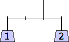
width=4
height=1
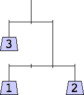
width=4
height=3
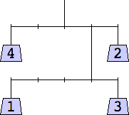
width=5
height=3
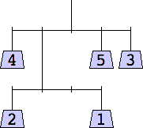
width=5
height=3
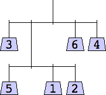
width=5
height=3
Smallest can have many different interpretations. It could also mean shortest, so many puzzles could fit vertically on a page. Unfortunately, for any set of weights, there always exist puzzles of height 1. (Can you prove this?) We could look for the thinnest solutions of height 1, but they tend to look like this for large n:
| 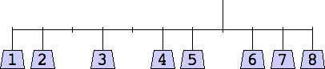 | 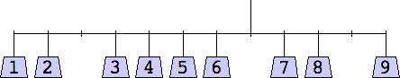 |
So instead, we take smallest to mean thinnest, so many puzzles could fit horizontally on a page. Among the thinnest we prefer the shortest. How small can configurations be for various n?
If we allow vertical strings to extend below horizontal bars, smaller solutions are possible. How small can they be without this restriction?
Of course the hard part of this problem is ensuring the solutions are unique. This is harder and harder to check for larger n.
Joe DeVincentis also showed that for n≥9, a width of at least 6 is required.
The thinnest known solutions are shown below.
| 1 width=1 | 2 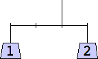 width=4 | 3 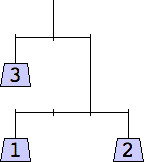 width=4 | 4 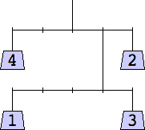 width=5 | 5 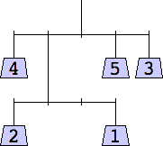 width=5 | 6 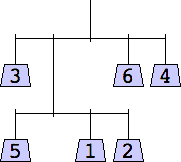 width=5 |
| 7 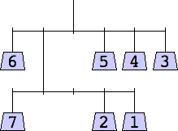 width=6 | 8 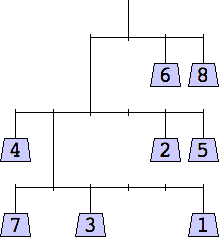 width=6 | 9 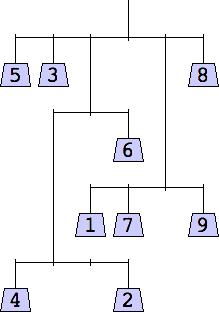 width=6 | 10 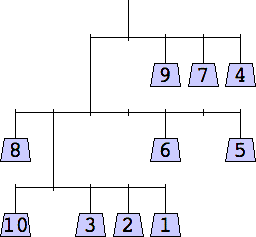 width=7 |
| 11 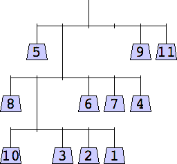 width=7 | 12 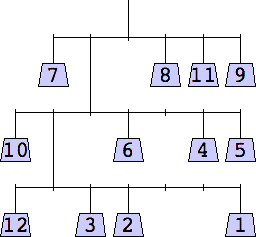 width=7 | 13 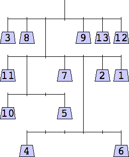 width=7 |
| 14 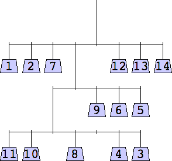 width=8 |
1 width=1 | 2 width=4 | 3 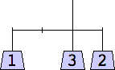 width=4 | 4 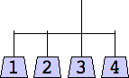 width=4 | 5 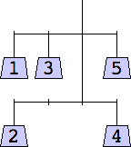 width=4 |
| 6 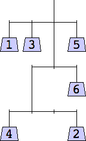 width=4 | 7 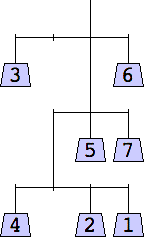 width=4 | 8 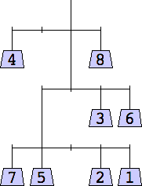 width=5 | 9 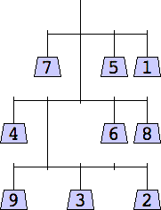 width=5 |
| 10 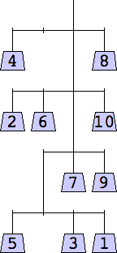 width=5 | 11 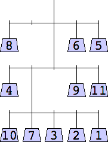 width=5 | 12 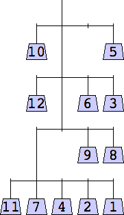 width=5 |
George Sicherman considered mobiles containing only odd weights:
| 1 width=1 | 3 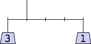 width=5 | 5 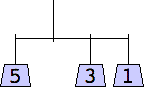 width=4 | 7 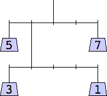 width=5 | 9 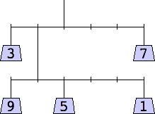 width=6 |
| 11 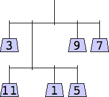 width=5 | 13 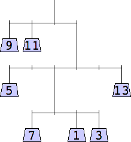 width=6 | 15 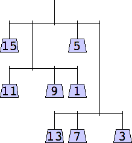 width=6 |
If you can extend any of these results, please e-mail me. Click here to go back to Math Magic. Last updated 12/20/12.